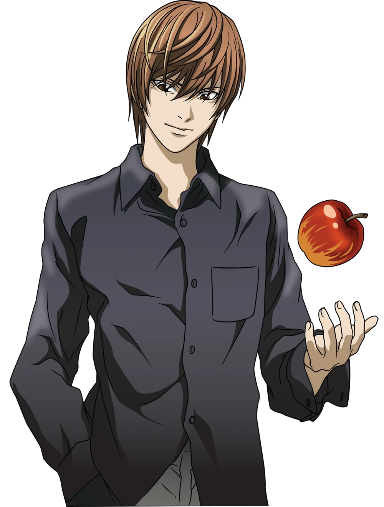
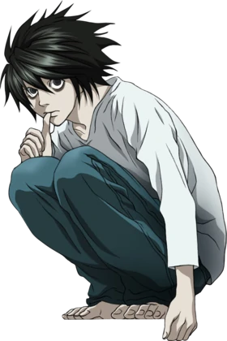
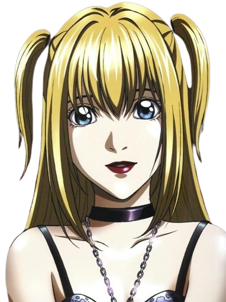
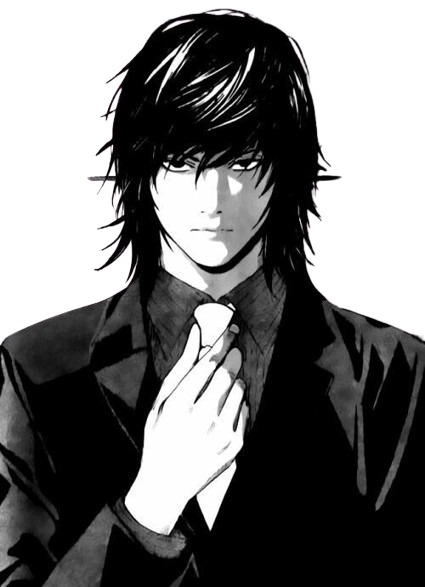

- 
- 
- 
- 
Light Yagami
L Lawliet
Misa Amane
Teru Mikami
Light Yagami (夜 神 月, Yagami Raito) é o principal protagonista da série Death Note. Ele era o melhor aluno do Japão, que vivia em um tédio profundo até descobrir o Death Note, decidindo como objetivo de vida punir todos os criminosos e pessoas que quiserem entrar em seu caminho, tendo que enfrentar a polícia do Japão, matando o maior detetive do mundo, L, e no final, morrendo após ser descoberto pelo sucessor do L, Near.
L (エル, Eru ) é um detetive de renome mundial que assume o desafio de pegar o serial killer conhecido apenas como Kira. Em sua investigação, L fica altamente desconfiado de Light e tem como objetivo provar que ele é Kira.
Misa Amane é um personagem fictício na série Death Note. Ela é uma modelo, atriz e cantora que adquiriu um Death Note que foi de Gelus através de Rem. Ela queria encontrar Kira por ter matado os assassinos dos pais dela e se apaixonou por ele.
Teru Mikami (魅 上 照, Mikami Teru) é um promotor criminal escolhido como a Mão de Kira por Light Yagami. Mikami assume a propriedade do Death Note de Gelus após Light ser suspeito de ser Kira novamente, e precisa de alguém para agir como Kira sem receber todas as ordens.